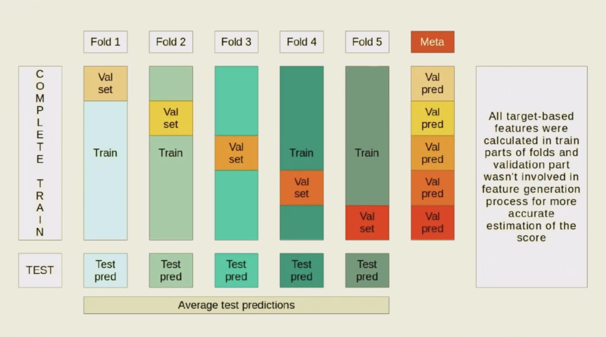

- CV: ykatser.github.io
- preparing for a DS interview: ten steps
YCombinator 2017 course: youtube
YCombinator 2017 course (with russian subtitles from RUSSOL and rusbase): rusbase
Harvard Business Review: site
http://libgen.is/: Books free downloading service
Podcasts: link
Агрегатор всех источников поддержки вашего бизнеса: Rusbase
All IAEA publications: All techical reviews, etc
Bayesian Inference & Graphical Models (by Vetrov): Koller09
Latent Variable Models (by Vetrov): Bishop06
A lot of ML competitions (from kaggle, drivendata, zindi, etc.): ods site
Data Science Resources: datascienceweekly.org (till 2014)
About ML (a lot of the links, in Russian): machinelearning.ru
Over 200 of the Best Machine Learning, NLP, and Python Tutorials — 2018 Edition (MIT's Les Fridman recommendation): Medium
Neural networks zoo: link
70 links on ML (for beginners): habr
Deep Learning presentation by Sapunov (intento): Presentation | Text
AutoML (NN): DARTS: Differentiable Architecture Search (Arxiv) | github
AutoKeras: arxiv
Models stacking: Dyakonov | kaggle
Кросс-валидация с оценкой значимости изменения и обработкой выбросов (Данила Савенков): youtube (Kaggle Mercedes Benz)
Convert a Time Series to a Supervised Learning Problem: machinelearningmastery.com
Irregular time series and how to whip them: youtube
LSTM: about+code | youtube (Kaspersky presentational) | arxiv (Kaspersky) | code (Forecasting with LSTMs in Keras) | code (LSTM Models) | notebook (local) | AE based on LSTM | VAR vs LSTM
Python : How to Save and Load ML Models: kaggle article
Data preprocessing for machine learning: options and recommendations (by google): cloud.google.com
CV scheme (McKinsey’s Datathon: The City Cup) — Валентина Бирюкова
Online courses and other DL staff (MIT's Les Fridman recommendation): fast.ai
D. Vetrov Байесовский подход к теории вероятностей. Байесовские рассуждения. Понятие о графических моделях. (поверхностный курс): youtube
D. Vetrov course on Bayesian methods in ML: youtube
K. Vorontsov course on ML: site (2007)
E. Sokolov course on ML (semi-beginners): github
Statistical forecasting: notes on regression and time series analysis: duke
Andrew Ng Deep learning on youtube: youtube
✅Andrew Ng anomaly detection course: youtube
COMPREHENSIVE DATA EXPLORATION WITH PYTHON: kaggle
ML Boot Camp II: model selection (hyperopt), feature engineering, ensembling
SIMPLE Feature Engineering Techniques (NAN processing, Label Encode/ Factorize/ Memory reduction, Categorical Features, Splitting, Combining / Transforming / Interaction, Aggregations / Group Statistics): kaggle
Statistical Learning Tutorial for Beginners (incl. CDF): kaggle
handling categorical variables: github
Bayesian Hyperparameters optimisation: github
Fraud detection (Summarizing Konstantin Yakovlev’s view of this competition): kaggle
Fraud detection material/comps in Kaggle: kaggle
Anomaly Detection Isolation Forest&Visualization (iForest): kaggle
Anomaly Detection with Time Series Forecasting (SARIMA, LSTM, Holtwinters): kaggle
Time Series Classification and Clustering: github
Flexibility, Interpretability, and Scalability in Time Series Modeling: youtube
kalman filters for non rocket scientists: youtube
Стас Семенов tinkoff: youtube
Kaggle BNP Paribas — Станислав Семенов: youtube
(PCA) Machine Learning for Real-Time Anomaly Detection in Network Time-Series Data: youtube
The Prognostics Data Repository is a collection of data sets that have been donated by various universities, agencies, or companies. The data repository focuses exclusively on prognostic data sets, i.e., data sets that can be used for development of prognostic algorithms. Mostly these are time series of data from some nominal state to a failed state. The collection of data in this repository is an ongoing process. link
The competition task was to build a network intrusion detector, a predictive model capable of distinguishing between ``bad'' connections, called intrusions or attacks, and ``good'' normal connections. link
Малополезный ресурс, есть данные по KDD Cup 1999 Data link
The Delft pump dataset, with some description in A. Ypma, Learning methods for machine vibration analysis and health monitoring, thesis Delft university of Technology, 2001.
The simple simulated nonlinear system (Shao et al. 2009) consists of three variables and two degrees of freedom.
The Tennessee Eastman process is a well-known simulated chemical process developed to provide a realistic industrial process on which to evaluate the performance of process control and monitoring methods (Russell et al. 2000b). The Eastman Chemical Company created a simulation of an actual chemical process with five major units and eight components (Downs and Vogel 1993).
A fault detection and identification benchmark was developed by the Development and Application Methods for Diagnosis of Actuators in Industrial Controls Systems (DAMADICS) research training network (DAMADICS RTN 2002). This benchmark is based on a real sugar refinery (Cukrownia Lublin SA) in Poland, where three actuators have been modified to allow the introduction of mechanically and electrically induced faults (Bartys ́ et al. 2006). Faults were introduced under supervised conditions to prevent the sugar factory from operating outside acceptable quality limits. Both simulated models and real data are available as benchmark data for fault detection and identification. Detailed information, simulators and process data of this benchmark is available from the DAMADICS research group website (DAMADICS RTN 2002).
These data sets were collected from a simple single-hop and a multi-hop wireless sensor network deployment using TelosB motes. Each data set consists of correlated process parameters (e.g. humidity and temperature) collected during a 6-hour period at intervals of 5 s. The Single-hop data was collected on 9th May 2010, and the multi-hop data was collected on 10th July 2010.
Since 1999, the DARPA99 data has been the most widely used data set for the IDS evaluations that use machine learning techniques. This data set was prepared by Stolfo et al. [50] and is built based on the data captured in the DARPA99 IDS evaluation program [51]. This data set contains raw traffic flow records with an associated label to indicate whether the record was labeled as either normal or an attack. In particular, the simulated attacks fall in one of the most common types of attacks including: a Denial of Service Attack (DoS), User to Root Attack (U2R), Remote to Local Attack (R2L) and a Probing Attack. The original DARPA data sets is about 4 GB of compressed raw (binary) tcpdump data of 7 weeks of network traffic, which can be processed into about 5 million connection records, each with about 100 bytes. This sample data set consists of approximately 10,000 single connection vectors each of which contains 41 attributes.
This data set was collected from the daily measures of sensors in a urban waste water treatment plant. The objective is to classify the operational state of the plant in order to identify the abnormality through the state variables of the plant at each of the stages of the treatment process. This data set consists of 527 instances and each instance contains 38 attributes and is labeled either normal or abnormal.
the traffic data sets collected by the high-performance network monitor (described in [49]) are some of the largest publicly available network traffic traces that are used in our experiment. These data sets are based on traces captured using its loss-limited, full-payload capture to disk where timestamps with a resolution of better than 35 ns are provided. The data were taken for several different periods in time from one site on the Internet. This site is a research- facility which hosts up to 1000 users connected to the Internet via a full-duplex Gigabyte Ethernet link. Full-duplex traffic on this connection was monitored for each traffic set. The site hosts several biology-related facilities, collectively referred to as Genome Campus (Cambridge Lab). There are three institutions on-site that employ about 1,000 researchers, administrators and technical staff. This campus is connected to the Internet via a full-duplex Gigabyte Ethernet link. It was on this connection to the Internet that the monitor was placed. Each traffic set consists of a full 24 h, week-day period in both link directions.
The NAB corpus of 58 timeseries data files is designed to provide data for research in streaming anomaly detection. It is comprised of both real-world and artifical timeseries data containing labeled anomalous periods of behavior. The majority of the data is real-world from a variety of sources such as AWS server metrics, Twitter volume, advertisement clicking metrics, traffic data, and more. All data is included in the repository, with more details in the data readme.
Anomaly events range from minor operational problems which can be easily corrected to permanent spacecraft failures. The database includes spacecraft anomalies in interplanetary space and in near-earth orbit; the majority of the data comes from geostationary spacecraft.
Automatic anomaly detection is critical in today's world where the sheer volume of data makes it impossible to tag outliers manually. The goal of this dataset is to benchmark your anomaly detection algorithm. The dataset consists of real and synthetic time-series with tagged anomaly points. The dataset tests the detection accuracy of various anomaly-types including outliers and change-points.
KPI is released by AIOPS data competition. The dataset consists of multiple KPI curves with anomaly labels collected from various Internet Companies, including Sogou, Tecent, eBay, etc. Most KPI curves have an interval of 1 minute between two adjacent data points, while some of them have an interval of 5 minutes.
Microsoft is a dataset obtained from our internal anomaly de- tection service at Microsoft. We select a collection of time-series randomly for evaluation. The selected time-series reflect different KPIs, including revenues, active users, number of pageviews, etc. The anomaly points are labeled by customers or editors manually; and the interval of these time-series is one day.
All datasets used in the following experiments can be downloaded here:
This dataset addresses the lack of public botnet datasets, especially for the IoT. It suggests *real* traffic data, gathered from 9 commercial IoT devices authentically infected by Mirai and BASHLITE.
Github repository with code link
List of tools & datasets for anomaly detection on time-series data. github
Playing with electricity - forecasting 5000 time series spark-in.me
A Python Toolbox for Scalable Outlier Detection (Anomaly Detection) site with all related materials | github with all related materials